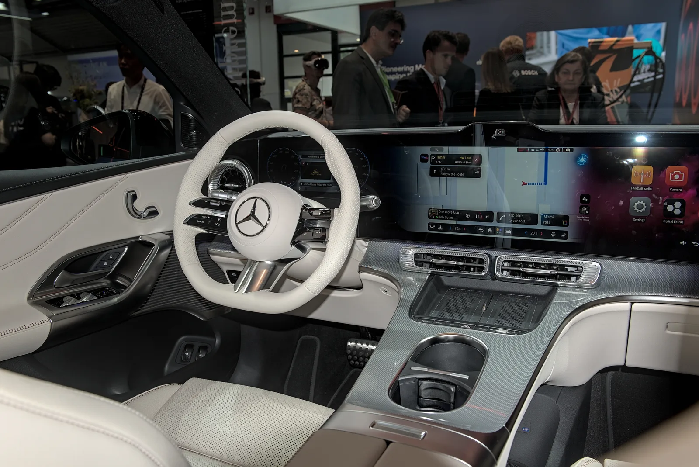
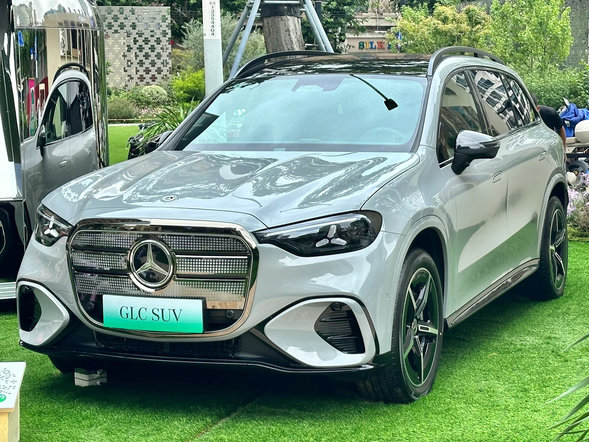

▲ 전기 GLC(GLC 400 4MATIC with EQ Technology). 국내에는 GLC 300 4MATIC이 먼저 들어온다 ⓒ Alexander-93, Wikimedia Commons (CC BY-SA 4.0)
수입 전기차의 사전계약 숫자는 대개 조용히 지나갑니다. 보조금이 확정되기 전이고, 실제 인도까지 시간이 남아 있기 때문입니다.
8월 27일 한성자동차가 내놓은 숫자는 700대였습니다. 국내 최대 벤츠 딜러가 디 올 뉴 일렉트릭 GLC 사전계약이 700대를 넘겼다고 밝혔습니다.
1. 700대라는 숫자의 위치
700대는 한 딜러사 기준입니다. 벤츠코리아 전체 사전계약이 아니라, 한성자동차 한 곳에서만 집계된 수치라는 뜻입니다.
국내 수입 전기 SUV에서 9,000만 원대 가격표를 달고 인도 전에 세 자릿수 후반을 채우는 사례는 흔하지 않습니다. 특히 보조금 규모가 확정되지 않은 시점이라는 점을 감안하면 더 그렇습니다.
📍 GLC라는 이름의 무게
GLC는 벤츠 SUV 라인업에서 판매량을 책임지는 중형 축입니다. 전기차 전용 이름(EQC·EQE·EQS)이 아니라 기존 GLC 이름을 그대로 쓴 첫 전기 모델이라는 점이 이번 차의 성격을 보여줍니다.
벤츠는 EQ 접두어를 정리하고 기존 모델명 + EQ 테크놀로지 방식으로 전환하는 중입니다.
2. 국내 사양은 GLC 300 4MATIC
국내에 먼저 들어오는 트림은 GLC 300 4MATIC 일렉트릭입니다. AMG 라인과 AMG 라인+ 두 가지 론치 에디션으로 시작합니다.
| 항목 | 내용 |
|---|---|
| AMG 라인 | 9,000만 원 |
| AMG 라인+ | 9,480만 원 |
| 최고출력 | 310kW |
| 주행거리 | WLTP 616km |
| 충전 | 800V · 최대 330kW DC · 10→80% 약 22분 |
| 인도 | 2026년 4분기 |

▲ 전기 GLC 후면. 좌우 램프가 원형 그래픽으로 연결된다 ⓒ Alexander Migl, Wikimedia Commons (CC BY-SA 4.0)
3. 800V와 22분이 뜻하는 것
이 차의 실질적인 핵심은 충전 쪽입니다. 800V 아키텍처를 채택해 국내 330kW급 초급속 충전기의 출력을 그대로 받습니다.
10%에서 80%까지 약 22분입니다. 국내에서 흔한 350kW·200kW급 충전소를 쓸 때 실제 체감 시간은 이 근처에서 형성됩니다. 400V 시스템 차량이 같은 충전기에서 절반 수준의 출력만 받는 것과 대비됩니다.
📍 400V와 800V의 차이
충전 속도는 전압 × 전류로 결정됩니다. 전류를 무한정 올리면 발열이 심해지므로, 전압을 올리는 쪽이 유리합니다.
800V 차량은 같은 케이블로 두 배 가까운 전력을 받을 수 있습니다. 국내 초급속 충전 인프라가 늘어난 지금은 실사용 차이가 분명하게 드러납니다.
4. 글로벌 최상위는 GLC 400 4MATIC
해외에서 먼저 공개된 트림은 GLC 400 4MATIC with EQ Technology입니다. 국내 도입 사양보다 위에 있는 구성이며, 내년 상반기 중 국내 출시가 예고돼 있습니다.
| 항목 | 수치 |
|---|---|
| 배터리 | 94.4kWh |
| 출력 | 360kW (약 483마력) |
| 토크 | 800Nm |
| 주행거리 | WLTP 630km |
| 0→100km/h | 4.3초 |
| 특징 | 후륜 2단 변속기 적용 |
후륜 2단 변속기는 전기차에서 흔치 않은 구성입니다. 저속에서는 가속력을, 고속에서는 효율을 챙기기 위한 장치입니다. 전기 모터는 단일 기어로도 충분하다는 것이 통설이었지만, 고속 주행 비중이 큰 유럽 시장에서는 효율 이점이 분명합니다.

▲ 전기 GLC 실내. 계기판부터 조수석까지 이어지는 대형 디스플레이가 대시보드를 가로지른다 ⓒ Alexander-93, Wikimedia Commons (CC BY-SA 4.0)
5. 딜러가 파는 방식을 바꿨습니다
한성자동차가 이번 발표에서 함께 강조한 것은 RoF(Retail of the Future) 전환입니다. 4월 13일 시행돼 약 4개월이 지났습니다.
| 항목 | 내용 |
|---|---|
| CXM | 고객 경험 총괄 매니저 도입 |
| BDC | 비즈니스 개발센터 운영 |
| 서비스 | 서비스센터 확충 |
| 교육 | AS Academy 운영 |
RoF는 영업사원 단위의 판매에서 브랜드 단위의 고객 경험 관리로 축을 옮기는 구조입니다. 딜러 간 가격 경쟁이 줄어드는 대신, 상담·인도·정비가 하나의 흐름으로 묶입니다.
6. 중국에는 더 긴 차가 있습니다
전기 GLC는 시장별로 구성이 갈립니다. 중국에는 휠베이스를 늘린 GLC 350L이 별도로 준비됐습니다.

▲ 중국 시장용 GLC 350L 일렉트릭. 뒷좌석 공간을 중시하는 현지 수요에 맞춰 휠베이스를 늘렸다 ⓒ JustAnotherCarDesigner, Wikimedia Commons (CC0)
국내에는 표준 휠베이스 모델이 들어옵니다. 뒷좌석 거주성을 우선한다면 이 점은 확인해둘 필요가 있습니다.
7. 정리
한성자동차가 디 올 뉴 일렉트릭 GLC 사전계약 700대 돌파를 밝혔습니다. 사전계약은 7월 9일 시작됐고 인도는 4분기 예정입니다.
국내 사양은 GLC 300 4MATIC으로, AMG 라인 9,000만 원·AMG 라인+ 9,480만 원입니다. 310kW 출력에 WLTP 616km, 800V 시스템으로 330kW 급속 충전 시 10→80% 약 22분입니다.
글로벌 상위 트림 GLC 400 4MATIC은 94.4kWh·360kW·WLTP 630km이며 후륜 2단 변속기를 씁니다. 한성차는 4월 13일부터 RoF 체제로 운영 중입니다.